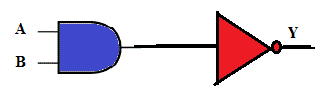
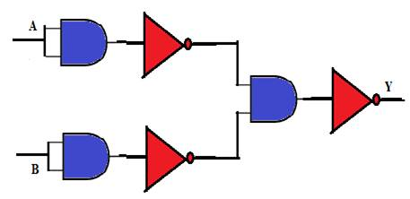
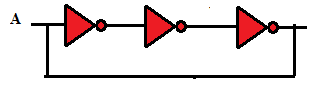
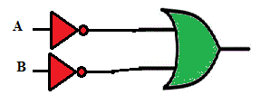
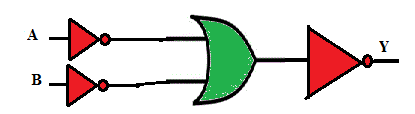

Q1. For the combination shown below, the Boolean expression for Y is:

A
Y = A’. B’
B
Y = A. B
C
Y = (A . B)’
D
Y = A + B
Ans is C
Q2. For the circuit shown below the Boolean expression for the output is expressed as :

A
Y = A + B
B
Y = A . B
C
Y = (A . B)’
D
Y = A’ + B’
Ans is A
Q3. For the circuit shown below, if a momentary Logic 1 is applied to input A, then the output will be:

A
0
B
1
C
Square wave (Toggling)
D
None of these
Ans is C
Q4. The equivalent gate representing the combination shown below is:

A
AND
B
Bubbled AND
C
NAND
D
XOR
Ans is C
Q5. The Boolean expression for output Y is:

A
A’. B’
B
A’ + B’
C
A + B
D
A.B
Ans is D